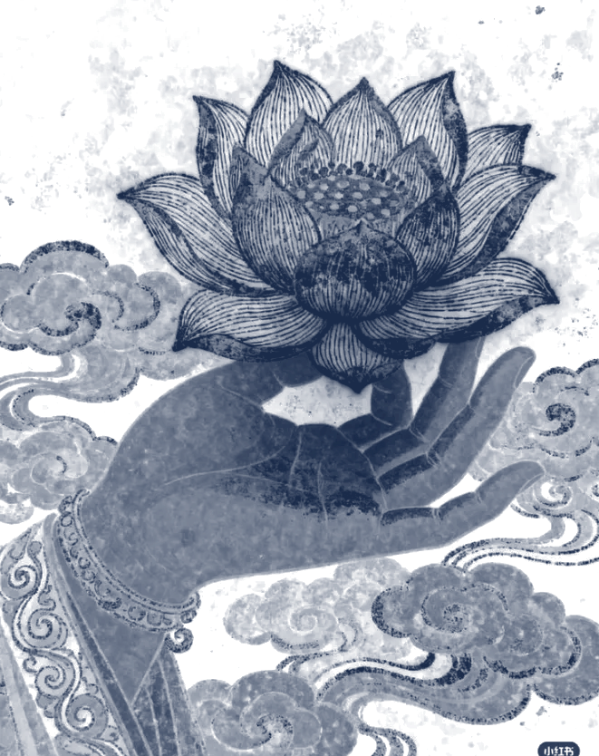
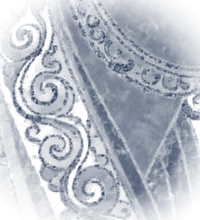

A student in constant bloom — absorbing the waters, rooted all the same. Essays, research, notes and the occasional verse.

Building SaaS for the informal sector What software has to give up to be useful to a ten-machine fleet.